Évaluer la capacité à concevoir, modéliser et valider une pièce mécanique complexe en respectant :
la géométrie donnée (plans + rendus 3D)
la masse cible (calcul à la décimale près)
la gestion des erreurs d’unités et d’arrondis
2. 📐 Spécifications et livrables
Unité : MMGS (millimètre, gramme, seconde)
Décimales : 2
Matériau : Aluminium 1060 (ρ = 2700 kg/m³)
Congés filetés : 12 × R10
Trous : tous débouchants sauf indication contraire
Livrables
Fichier CAO de la pièce modélisée (.SLDPRT ou équivalent)
Tableau de calcul des masses pour les trois jeux de dimensions
Rapport détaillé décrivant la démarche et les arrondis appliqués
3. Processus et méthodologie
Nous avons respecté toutes les côtes et tolérances du document fourni. Chaque étape contient un emplacement pour insérer vos captures d’écran afin d’illustrer l’avancement.
1. Import des plans et préparation du fichier
But : récupérer les vues 2D/3D et caler l’origine.
Ouvrir le modèle de base (template CAO).
Insérer les esquisses des vues (dessus, face, coupe).
Vérifier l’échelle (MMGS) et la position de l’origine.
2. Esquisse de la forme principale
But : tracer la silhouette trapézoïdale et les grands évidements.
Sur le plan supérieur, dessiner le contour extérieur avec les valeurs adéquates.
Ajouter les cavités carrées (grandes alvéoles) centrées.
Placer l’axe de symétrie pour assurer la symétrie des opérations suivantes.
3. Extrusion et découpe initiale
But : donner l’épaisseur de base et définir les volumes à enlever.
Extruder la forme principale à la hauteur demandée (zones basses et hautes).
Appliquer une coupe droite pour séparer les deux hauteurs selon.
4. Création des évidements secondaires et rainures
But : réaliser la rainure centrale et les évidements latéraux.
Sur la face supérieure, esquisser la rainure (épaisseur 5 mm, profondeur 2,5 mm).
Extruder enlevé sur la profondeur spécifiée.
Reproduire l’opération de chaque côté selon symétrie.
5. Perçages et congés
But : ajouter tous les trous débouchants et arrondir les arêtes intérieures.
Modéliser chaque perçage Ø10 aux emplacements spécifiés.
Appliquer les congés R10 sur les 12 arrêtes intérieures.
6. Découpe inclinée et formes angulaires
But : réaliser une coupe à travers la pièce et les transitions.
Esquisser la ligne de coupe inclinée sur la vue latérale.
Extruder enlevé en traversant tout le volume.
Vérifier l’angle et ajuster si nécessaire.
7. Détails finaux et contrôle qualité
Vérifier toutes les côtes critiques avec l’outil de mesure.
Comparer visuellement avec les rendus 3D fournis (couleur, placement des éléments).
Enregistrer et nommer correctement le fichier .SLDPRT.
Illustrations — Processus (images)
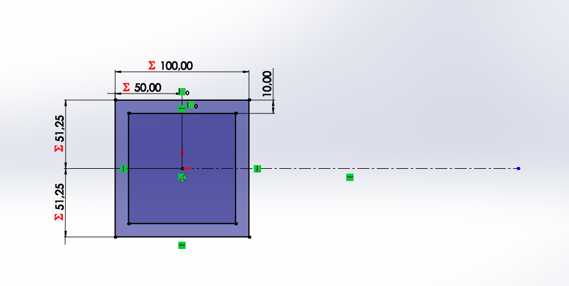
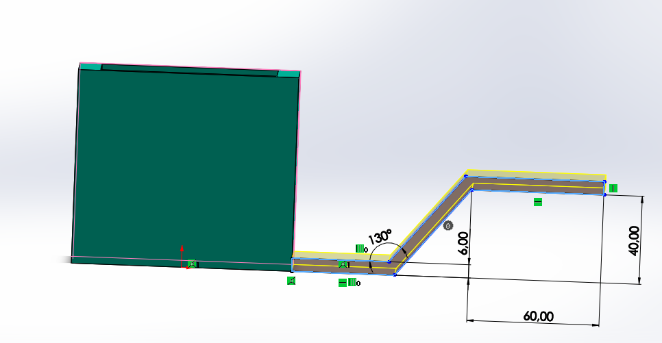
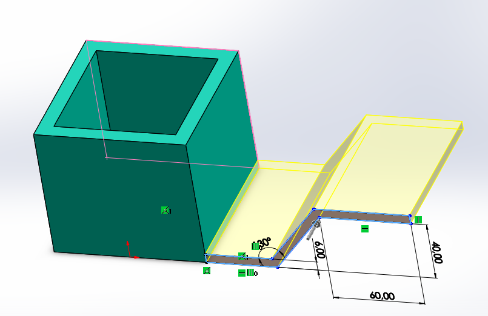
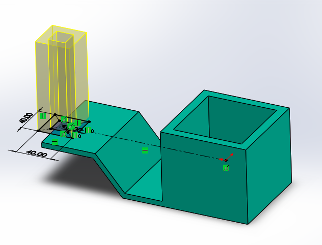
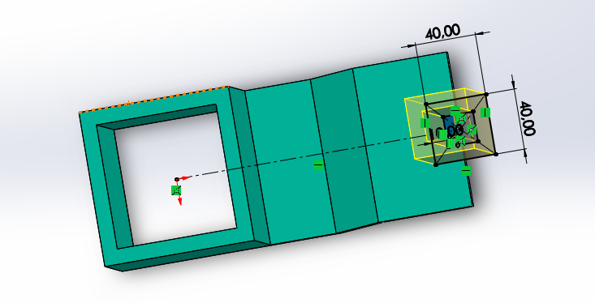
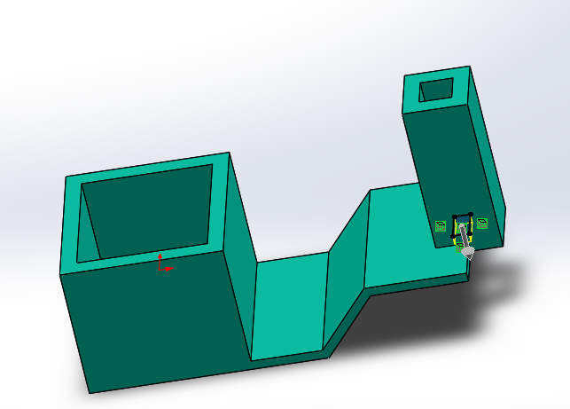
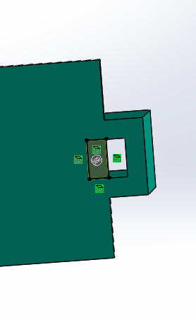
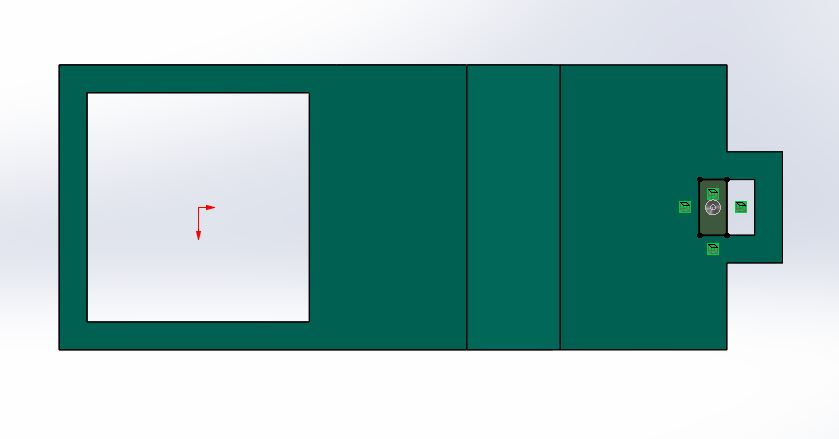
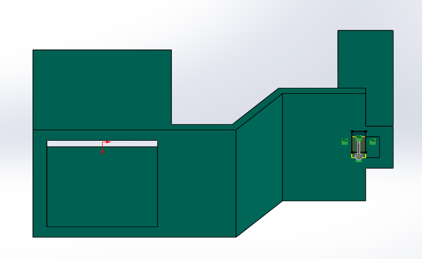
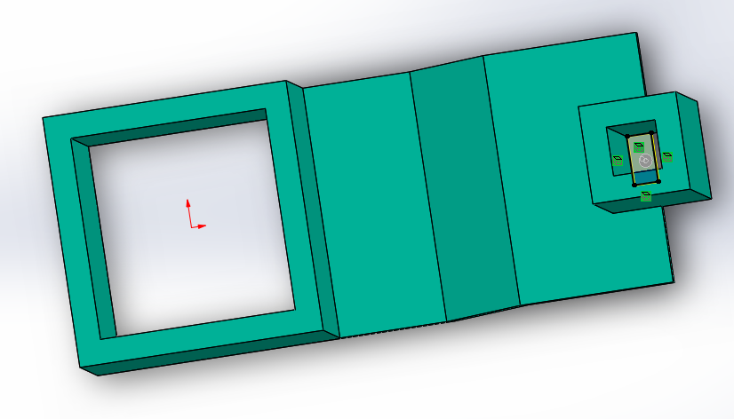
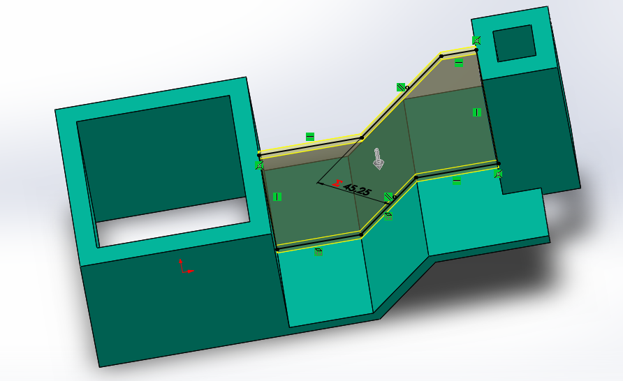
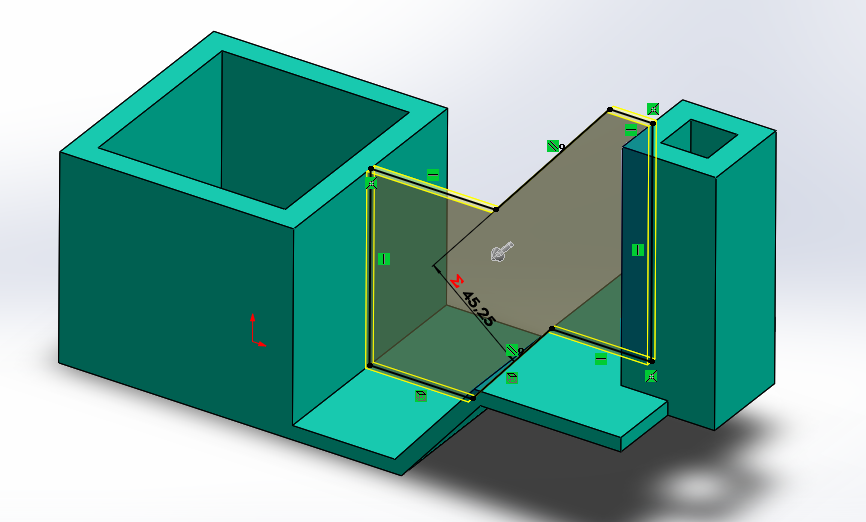
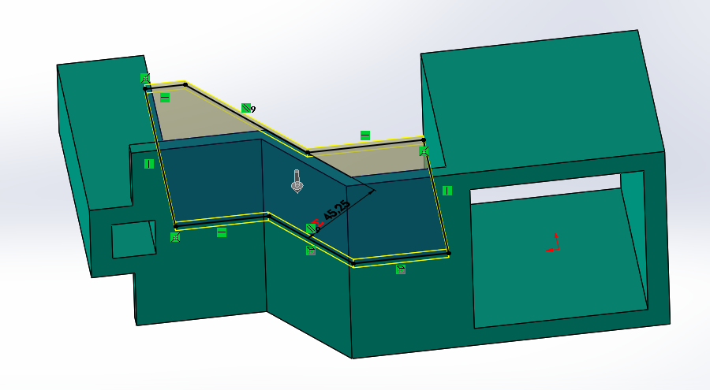
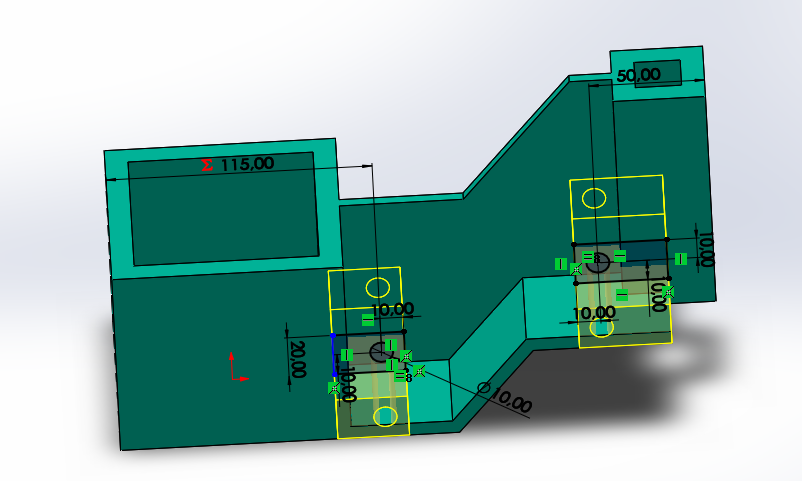
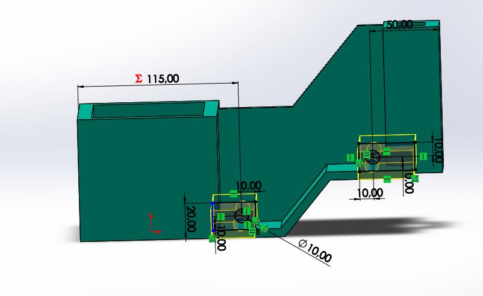
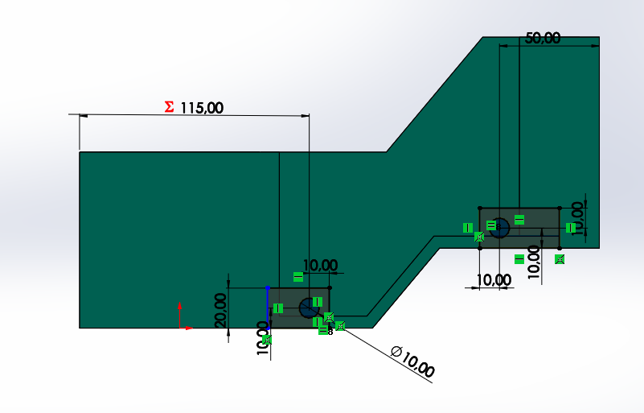
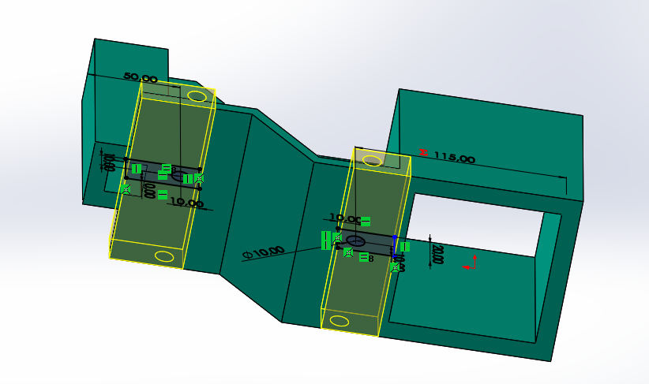
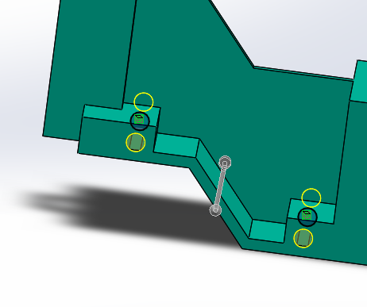
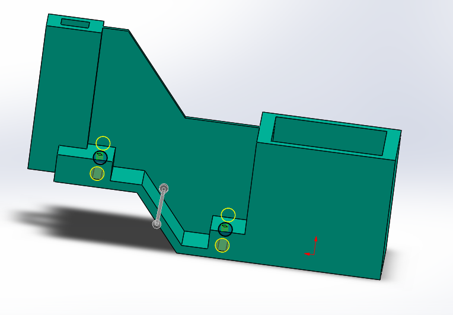
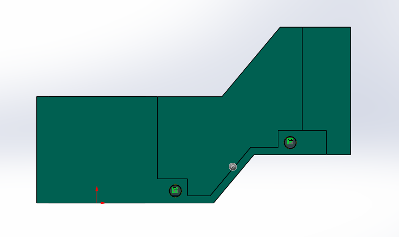
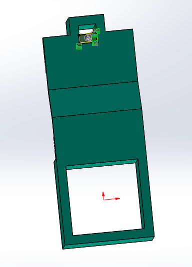
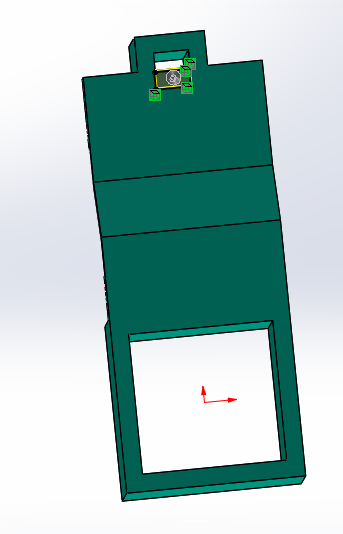
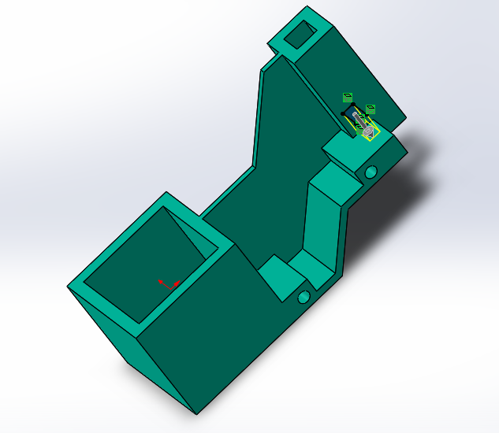
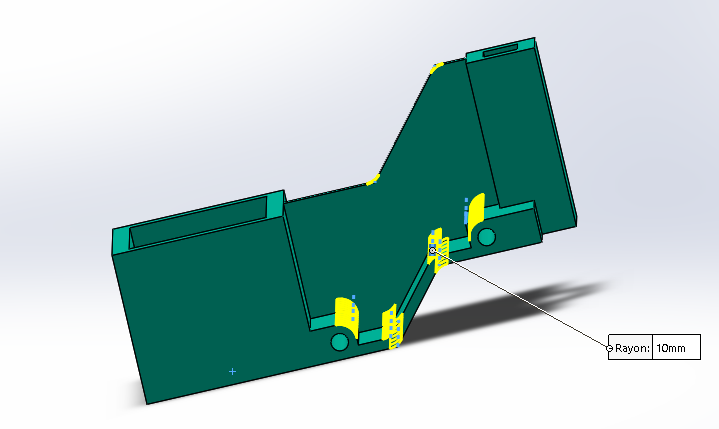
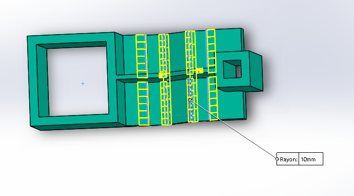
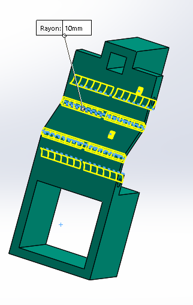
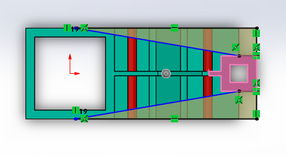
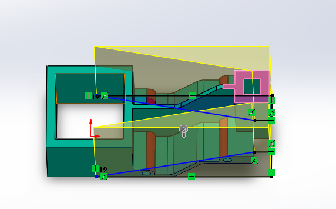
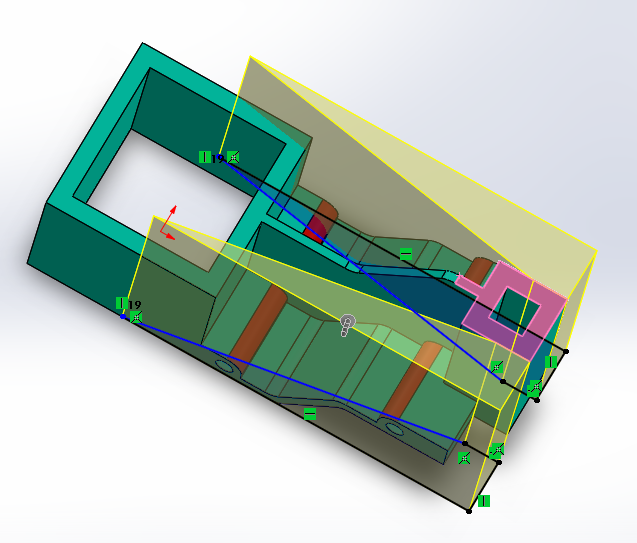
Figure : Processus en image de construction de la pièce du test 3.
4. 🛠️ Tâches à réaliser
Pour chaque jeu de dimensions, calculer la masse de la pièce (en grammes) :
Q3a. A = 193 mm ; B = 88 mm ; W = B/2 ; X = A/4 ; Y = B + 5,5 mm ; Z = B + 15 mm
Q3b. A = 205 mm ; B = 100 mm ; W = B/2 ; X = A/4 ; Y = B + 5,5 mm ; Z = B + 15 mm
Q3c. A = 210 mm ; B = 105 mm ; W = B/2 ; X = A/4 ; Y = B + 5,5 mm ; Z = B + 15 mm
À fournir :
Les valeurs numériques (masse en g, arrondie à 2 décimales)
Capture d’écran du calcul de volume/masse dans le logiciel CAO